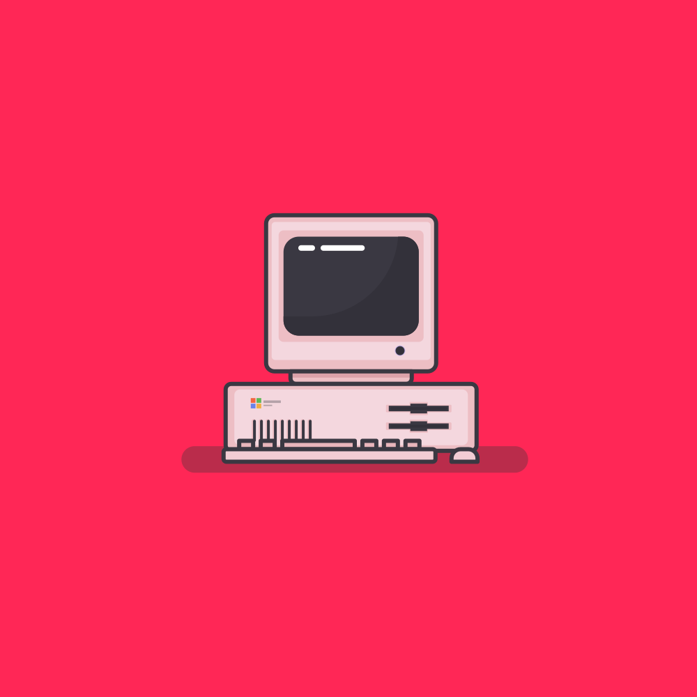

Hi I am Caleb and I love technology. One of the many things I love to do is to mess with computers and play video games. I also love to build computers. I have built 3 computers 2 of them were for my friends. I love to play games with my friends and talk to them over the internet. I also love to hangout with them in person.